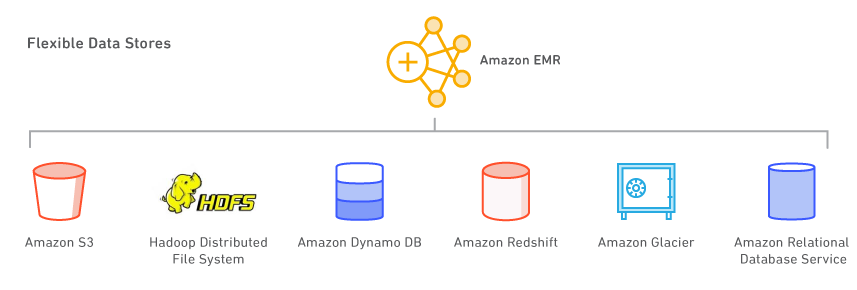
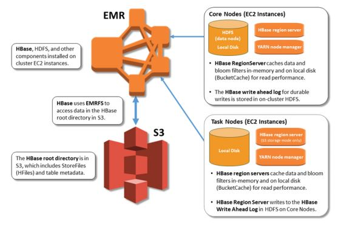
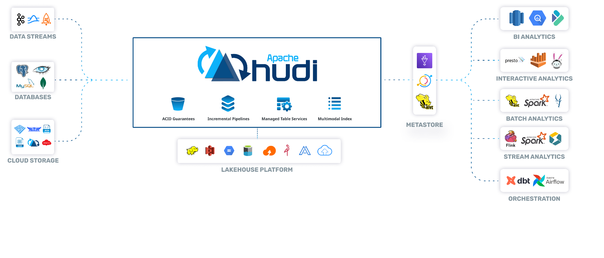

Amazon EMR
- Amazon EMR is highly scalable big data platform that supports open source tools such as Apache Spark, Apache Hive, Apache HBase, Apache Flink, Apache Hudi (Incubating), and Presto.
- With EMR you can run Petabyte-scale analysis at less than half of the cost of traditional on-premises solutions and over 3x faster than standard Apache Spark.
- For short-running jobs, you can spin up and spin down clusters and pay per second for the instances used.
- For long-running workloads, you can create highly available clusters that automatically scale to meet demand.
Amazon EMR supports a number of databases as target 
Apache Ranger on EMR
Apache Ranger is a role-based access control framework to enable, monitor, and manage comprehensive data security across the Hadoop platform.
Key Characteristics
- Centralized security administration and auditing.
- Fine-grained authorization across many Hadoop components (Hadoop, Hive, HBase, Storm, Knox, Solr, Kafka, and YARN).
- Syncs policies and users by using agents and plugins that run within the same process as the Hadoop component.
- Supports row-level authentication and auditing capabilities with embedded search.
Amazon EMR & Events
- You can now respond to Amazon EMR cluster state changes with Amazon CloudWatch Events.
- The new Amazon EMR event types in Amazon CloudWatch Events provide information including state and related severity for Amazon EMR clusters, instance groups, steps, and Auto Scaling policies.
EMRFS
- EMRFS uses an Amazon DynamoDB database to store object metadata and track consistency in Amazon S3.
- EMRFS allows you to define retry rules for processing inconsistencies.
S3DistCP Tool
- Apache DistCp is an open-source tool you can use to copy large amounts of data.
- S3DistCp is similar to DistCp, but optimized to work with AWS, particularly Amazon S3. S3DistCp is more performant than DistCp.
- The command for S3DistCp in Amazon EMR version 4.0 and later is s3-dist-cp, which you add as a step in a cluster or at the command line.
- Using S3DistCp, you can efficiently copy large amounts of data from Amazon S3 into HDFS where it can be processed by subsequent steps in your Amazon EMR cluster.
- You can also use S3DistCp to copy data between Amazon S3 buckets or from HDFS to Amazon S3.
- S3DistCp is more scalable and efficient for parallel copying large numbers of objects across buckets and across AWS accounts.
By adding S3DistCp as a step in a job flow, you can efficiently copy large amounts of data from Amazon S3 into HDFS, where subsequent steps in your EMR clusters can process it.
S3DistCp does not support concatenation for Parquet files. When you attempt to concatenate them, you get an error message like this: "Expected n values in column chunk at /path/to/concatenated/parquet/file offset m but got x values instead over y pages ending at file offset z" Amazon recommends using PySpark instead. You can't specify the target file size in PySpark, but you can specify the number of partitions. Spark saves each partition to a separate output file. To estimate the number of partitions that you need, divide the size of the dataset by the target individual file size.

EMRFS Identity & Access Management (IAM)
- EMRFS uses the permissions attached to the service role for cluster EC2 instances by default.
- When you have multiple cluster users and multiple data stores, you may want users to have different permissions to EMRFS data in Amazon S3.
- To do this, you can you can use IAM roles for EMRFS.
- This allows EMRFS to assume different roles with different permissions policies based on the user or group making the request or the location of EMRFS data in Amazon S3.
Because IAM roles for EMRFS will fall back to the permissions attached to the service role for cluster EC2 instances, as a best practice, we recommend that you use IAM roles for EMRFS, and limit the EMRFS and Amazon S3 permissions attached to the service role for cluster EC2 instances.
With the release of Amazon S3 strong read-after-write consistency on December 1, 2020, you no longer need to use EMRFS consistent view (EMRFS CV) with your Amazon EMR clusters.
Notifications
Amazon EMR can only be configured as a publisher to an SNS topic—it cannot subscribe to notifications.
High Availability
- Amazon EMR supports multiple master nodes to enable high availability for EMR applications.
- Launch an EMR cluster with three master nodes and support high availability applications like YARN Resource Manager, HDFS Name Node, Spark, Hive, and Ganglia.
- EMR clusters with multiple master nodes are not tolerant of Availability Zone failures. In the case of an Availability Zone outage, you lose access to the EMR cluster.
- Using the Amazon EMR version 5.7.0 or later, you can set up a read-replica cluster, which allows you to maintain read-only copies of data in Amazon S3. In the event that the primary cluster becomes unavailable, you can access the data from the read-replica cluster to perform read operations simultaneously.
Auto-scaling
When you create a cluster and specify the configuration of the master node, core nodes, and task nodes, you have two configuration options. You can use:
- Instance fleets
- Instance groups (provides autoscaling)
When automatic scaling is configured, Amazon EMR adds and removes instances based on Amazon CloudWatch metrics that you specify.
The following are two of the most common metrics used for automatic scaling in Amazon EMR:
- YarnMemoryAvailablePercentage: The percentage of remaining memory available to YARN.
- ContainerPendingRatio: The ratio of pending containers to containers allocated. You can use this metric to scale a cluster based on container-allocation behavior for varied loads, which is useful for performance tuning.
- CapacityRemainingGB metric is the amount of remaining HDFS disk capacity.
Metastore
Using Amazon EMR version 5.8.0 or later, you can configure Hive to use the AWS Glue Data Catalog as its metastore. This configuration is recommended if the metastore is shared by different clusters.
EMR Components
Presto
- Presto is a fast SQL query engine designed for interactive analytic queries over large datasets from multiple sources.
- It supports both non-relational sources, such as the Hadoop Distributed File System (HDFS), Amazon S3, and HBase, and relational data sources such as MySQL, PostgreSQL, and Amazon Redshift.
- Presto can query data where it’s stored, without needing to move data into a separate analytics system.
- Query execution runs in parallel over a pure memory-based architecture, with most results returning in seconds.
You can launch a Presto on Amazon EMR cluster in minutes. You don’t need to worry about node provisioning, cluster setup, configuration, or cluster tuning. Amazon EMR takes care of these tasks so you can focus on analysis.
If the use case is Interactive Analytic queries over large datasets from multiple sources, choose Presto on EMR.
Spark
- Apache Spark is an open-source, distributed processing system used for big data workloads.
- It utilizes in-memory caching, and optimized query execution for fast analytic queries against data of any size.
- It provides development APIs in Java, Scala, Python and R, and supports code reuse across multiple workloads—batch processing, interactive queries, real-time analytics, machine learning, and graph processing.
- One of the speed advantages of Apache Spark comes from loading data into immutable dataframes, which can be accessed repeatedly in memory.
- Spark DataFrames organizes distributed data into columns. This makes summaries and aggregates much quicker to calculate.
Stream processing
- Consume and process real-time data from Amazon Kinesis, Apache Kafka, or other data streams with Spark Streaming on EMR.
- Perform streaming analytics in a fault-tolerant way and write results to S3 or on-cluster HDFS.
For a more efficient stream processing Flink could be a better fit than Spark (since Spark employs a micro-batch approach)
Interactive SQL
- Use Spark SQL for low-latency, interactive queries with SQL or HiveQL.
- Spark on EMR can leverage EMRFS, so you can have ad hoc access to your datasets in S3.
- Also, you can utilize EMR Studio, EMR Notebooks, Zeppelin notebooks, or BI tools via ODBC and JDBC connections.
Hive
Apache Hive is an open-source, distributed, fault-tolerant system that provides data warehouse-like query capabilities. It enables users to read, write, and manage petabytes of data using a SQL-like interface.
Hive vs HBase: Apache HBase is a NoSQL distributed database that enables random, strictly consistent, real-time access to petabytes of data. Apache Hive is a distributed data warehouse system that provides SQL-like querying capabilities.
Ad-Hoc SQL Queries on S3
- Airbnb uses Amazon EMR to run Apache Hive on a S3 data lake.
- Running Hive on the EMR clusters enables Airbnb analysts to perform ad hoc SQL queries on data stored in the S3 data lake.
- By migrating to a S3 data lake, Airbnb reduced expenses, can now do cost attribution, and increased the speed of Apache Spark jobs by three times their original speed.
Hive enables analysts to perform ad hoc SQL queries on data stored in the S3 data lake. This reduces operational costs.
Using Amazon EMR version 5.8.0 or later, you can configure Hive to use the AWS Glue Data Catalog as its metastore. This configuration is recommended if the metastore is shared by different clusters.
Hive vs. Impala: The main difference between Hive and Impala is that the Hive is a data warehouse software that can be used to access and manage large distributed datasets built on Hadoop while Impala is a massive parallel processing SQL engine for managing and analyzing data stored on Hadoop.
HBase
- Apache HBase is an open-source, NoSQL, distributed big data store.
- It enables random, strictly consistent, real-time access to petabytes of data.
- HBase is very effective for handling large, sparse datasets.
- HBase integrates seamlessly with Apache Hadoop and the Hadoop ecosystem and runs on top of the Hadoop Distributed File System (HDFS) or Amazon S3 using Amazon Elastic MapReduce (EMR) file system, or EMRFS.
- HBase serves as a direct input and output to the Apache MapReduce framework for Hadoop, and works with Apache Phoenix to enable SQL-like queries over HBase tables.
Hudi
Hudi brings (a) transactions (b) change streams and (c) record-level updates/deletes to Data Lakes.

Transient Clusters
- Amazon EMR can be used to quickly and cost-effectively perform data transformation workloads (ETL) such as sort, aggregate, and join on large datasets.
- You can use a transient cluster to aggregate the sensors' data each night. After it is completed, the transient clusters are automatically terminated.
- This service will help you save costs since it will only run each night, and you can use Amazon QuickSight to get insights instantly and effortlessly.
Process Data with Custom JAR
- A custom JAR runs a compiled Java program that you can upload to Amazon S3.
- You should compile the program against the version of Hadoop you want to launch, and submit a CUSTOM_JAR step to your Amazon EMR cluster.
Encryption
- You can choose to encrypt data in Amazon S3, local disks, or both.
- When you create a security configuration, you specify two sets of encryption options: at-rest data encryption and in-transit data encryption.
- Options for at-rest data encryption include both Amazon S3 with EMRFS and local-disk encryption.
- In-transit encryption options enable the open-source encryption features for certain applications that support Transport Layer Security (TLS).
- At-rest options and in-transit options can be enabled together or separately.
EMR and DynamoDB
- AWS offers out-of-the-box Amazon Elastic MapReduce (Amazon EMR) integration with Amazon DynamoDB, providing customers an integrated solution that eliminates the often prohibitive costs of administration, maintenance, and upfront hardware.